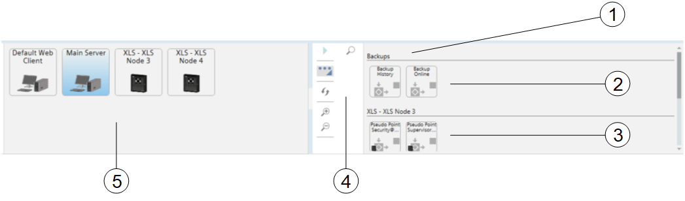
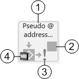

Macro Viewer
This section provides reference and background information about the Macro Viewer application. For related procedures, see the step-by-step section.
Overview
The Macro Viewer is an application for displaying and commanding selected control objects such as system macros and pseudo-points, represented by a set of symbols. To start the command action, you select a symbol and click the Execute command icon  in the toolbar. The symbols are grouped by the location of their corresponding objects: Desigo CC or control panels.
in the toolbar. The symbols are grouped by the location of their corresponding objects: Desigo CC or control panels.
The Macro Viewer is fully integrated with the other system applications. You can double click a symbol to select the corresponding object in System Manager. In addition, a filtering selection on the Node Map also applies to the Macro Viewer, for instance when you want to focus on events and commands of a specific fire control panel.
User Interface

User Interface with the Macro Viewer | ||
| Name | Description |
1 | Macro Viewer | Macro Viewer pane. |
2 | Macros | Group of macro symbols. The groups correspond with the folders of the macros in System Browser. |
3 | Pseudo-points | Pseudo-point symbols, grouped according to the control panels. |
4 | Macro Viewer Toolbar | Toolbar with display and control commands. |
5 | Node Map | Node map symbols. |

Macro Viewer Symbol | ||
| Name | Description |
1 | Label | Object Description. |
2 | Object status | Stopped ( |
3 | Command not available | The exclamation mark indicates that you cannot command the object at the moment. |
4 | Object icon | The panel icon indicates that the object is located in the control panel and not in the central system. |
 ) or Running (
) or Running (-
Macro Viewer Toolbar
| Name | Description |
Execute/Stop | Start the command on the selected object. If a macro is started and still in progress, the | |
Expand/Reduce | Expand and reduce the toolbar. | |
Refresh (Engineering mode) | Refresh the Macro Viewer based on the Macro Viewer scope. | |
Zoom In | Enlarge the size of Macro Viewer. | |
Zoom Out | Reduce the size of Macro Viewer. | |
Show/Hide Search | Add/remove the search field. The view is dynamically filtered to match the text you type in the search field. |